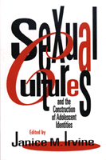

<body bgcolor="#FFFFFF" text="#000000" link="#0000FF" vlink="#CC0000" alink="#CC0000"><center><hr width="350" size="1" align="center" noshade>Adolescent sexual awakening is reevaluated in terms of social and cultural influences<hr width="350" size="1" align="center" noshade><p><a href="https://cdcshoppingcart.uchicago.edu/Cart/ChicagoBook.aspx?ISBN=9781566391351&&PRESS=temple" target="_top">Buy this book!</a> | <a href="https://cdcshoppingcart.uchicago.edu/Cart/Cart.aspx?PRESS=temple" target="_top">View Cart</a> | <a href="https://cdcshoppingcart.uchicago.edu/Cart/Cart.aspx?PRESS=temple" target="_top">Check Out</a></p><p></p></center><!--none//--><h1>Sexual Cultures and the Construction of Adolescent Identities</h1>
<h3>edited by Janice M. Irvine</h3>
<P>cloth 1-56639-135-0 $89.50, May 94, <FONT COLOR=#990033>Available</FONT>
<br>paper 1-56639-136-9 $33.95, Apr 94, <FONT COLOR=#990033>Available</FONT>
<br>Electronic Book 1-43990-162-7 $33.95 <FONT COLOR=#990033>Available</FONT>
<BR> 336 pp
6x9
7&nbsp;tables 3&nbsp;figures
</P><BLOCKQUOTE><I>"Will we engage with adolescents in frank discussion about sexual options and ethics or will we enforce a moralistic silence that resonates with fear and shame? Can we talk with teenagers about what they want to know, or can we only tell them what we want them to know?"</I>
<br>&#151From the Editor's Introduction<I></I></BLOCKQUOTE>
<p>This rich collection of essays presents a new vision of adolescent sexuality shaped by a variety of social factors: race and ethnicity, gender, sexual identity, physical ability, and cultural messages propagated in films, books, and within families. The contributors consider the full range of cultural influences that form a teenager's sexual identity and argue that education must include more than its current overriding message of denial hinged on warnings of HIV and AIDS infection and teenage pregnancy. Examining the sexual experiences, feelings, and development of Asians, Latinos, African Americans, gay man and lesbians, and disabled women, this book provides a new understanding of adolescent sexuality that goes beyond the biological approach all too often simplified as "surging hormones."
<BR>&nbsp;<h2>Excerpt</h2><P>Excerpt available at <a href="http://www.temple.edu/tempress">www.temple.edu/tempress</a></p>
<BR>&nbsp;<h2>Reviews</h2>
<p><I>"A book of compelling importance&#151this volume dissects contemporary myths about adolescent sexuality and presents a startling and powerful cultural and political analysis of adolescent development, sexuality and sexual expression. I recommend this book with a sense of urgency."</I>
<br>&#151<b>Dr. Michael A. Carrera</b>, Director, National Adolescent Sexuality Training Center, The Children's Aid Society
<BR>&nbsp;<h2>Contents</h2><P>
<p>Preface
<br>Acknowledgments
<p><b>Part I: Contexts and Theories</b>
<br>1. Culture, Identities, and the Discourse of Adolescent Sexuality &#150 Janice M. Irvine
<br>2. Adolescent Development: Whose Perspective? &#150 Jill Taylor
<br>3. Sexuality Education for Immigrant and Minority Students: Developing a Culturally Appropriate Curriculum &#150 Janie Victoria Ward and Jill Taylor
<p><b>Part II: Culture and Communities</b>
<br>4. Culture, Context, and HIV Infection: Research on Risk Taking Among Adolescents &#150 Lee Strunin
<br>5. Asian American Adolescents: Issues in the Expression of Sexuality &#150 Connie Chan
<br>6. AIDS and Latino Adolescents &#150 Luisa Medrano
<br>7. Homophobia, Identity, and the Meanings of Desire: Reflections on the Cultural Construction of Gay and Lesbian Adolescent Sexuality &#150 Diane Raymon
<br>8. Daughters with Disabilities: Defective Women or Minority Women? &#150 Harilyn Rousso
<p><b>Part III: Texts and Conversations</b>
<br>9. Keeping Adolescents in the Picture: Construction of Adolescent Sexuality in Textbook Images and Popular Films &#150 Mariamne H. Whatley
<br>10. Young Women and Their Dream Lovers: Sexuality in Adolescent Fiction &#150 Linda K. Christian-Smith
<br>11. What Friends Are For: On Girls' Misogyny and Romantic Fusion &#150 Sharon Thompson
<br>12. Daring to Desire: Culture and the Bodies of Adolescent Girls &#150 Deborah L. Tolman
<br>13. Speaking Across Cultures Within Your Own Family &#150 Janet Kahn
<br>14. Teens Talk Sex: Can We Talk Back? &#150 Robert E. Fullilove, Warren Barksdale, and Mindy Thompson Fullilove
<p>About the Contributors
</P><BR>&nbsp;<H2>About the Author(s)</H2>
<P><b>Janice M. Irvine</b> is Assistant Professor of Sociology at the University of Massachusetts and author of <I><a href="654a_reg.html" target="_top">Disorders of Desire: Sex and Gender in Modern American Sexology</a></I> (Temple).</P>
<P>Contributors: Jill Taylor, Janie Victoria Ward, Lee Strunin, Connie Chan, Luisa Medrano, Diane Raymon, Harilyn Rousso, Mariamne H. Whatley, Linda K. Christian-Smith, Sharon Thompson, Deborah L. Tolman, Janet Kahn, Robert E. Fullilove, Warren Barksdale, Mindy Thompson Fullilove, and the editor.</P>
<BR><H2>Subject Categories</H2>
<p><A HREF="/tempress/sexual.html" TARGET="_top">Sexuality Studies/Sexual Identity</a>
<BR><A HREF="/tempress/sociology.html" TARGET="_top">Sociology</a>
</p>
<BR><h2 class="inpageheading">In the series</H2>
<P><I><a href="http://www.temple.edu/tempress/health_society.html" onMouseOver="window.status='Click for other books in this series!'; return true;" onMouseOut="window.status=''; return true;" target="_top">Health, Society, and Policy</a></i>, edited by Sheryl Ruzek and Irving Kenneth Zola.
</p><p>No longer active.<p><i>Health, Society and Policy</i>, edited by Sheryl Ruzek and Irving Kenneth Zola, takes a critical stance with regard to health policy and medical practice, ranging broadly in subject matter. Backlist titles include books on the legal and professional status of midwifery, the experience and regulation of kidney transplants, the evolution of federal law on architectural access, and a political/ethical argument for making the community responsible for universal access to health care.</p>
<p align="center"><a href="https://cdcshoppingcart.uchicago.edu/Cart/ChicagoBook.aspx?ISBN=9781566391351&&PRESS=temple" target="_top">Buy this book!</a> | <a href="https://cdcshoppingcart.uchicago.edu/Cart/Cart.aspx?PRESS=temple" target="_top">View Cart</a> | <a href="https://cdcshoppingcart.uchicago.edu/Cart/Cart.aspx?PRESS=temple" target="_top">Check Out</a></p><p><font face="Arial" size="1"><a href="copyright.html" onMouseOver="window.status='Web Copyright Policy';return true;" onMouseOut="window.status=''" title="Web Copyright Policy">&copy;</a> 2015 <a href="http://www.temple.edu" target="new" onMouseOver="window.status='Link to Temple University home page';return true;" onMouseOut="window.status=''" title="Link to Temple University home page">Temple University</a>. All Rights Reserved. http://www.temple.edu/tempress/titles/927_reg.html</font></p>